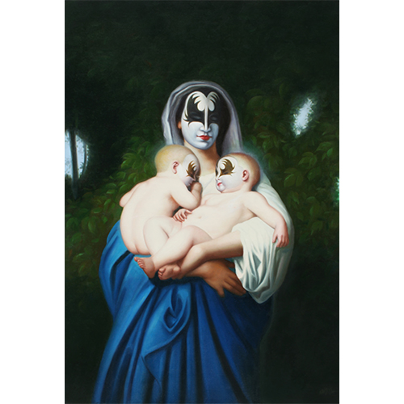

Exhibitions
The Secret History of Kiss, Shooting Gallery, San Francisco, California, US, November 1–December 6, 2008.
Literature
Ron English, Original Grin: The Art of Ron English (Paris: Cernunnos, 2019), p. 41. ISBN 978-2374950938.
Notes
This work appears in cropped form on Shooting Gallery SF’s gallery page for The Secret History of Kiss, available here, accessed April 17, 2026.
The composition references William-Adolphe Bouguereau’s painting Charity.

It also references Gene Simmons of the band KISS in his signature makeup; a representative image is available here.
Ancillary Documentation